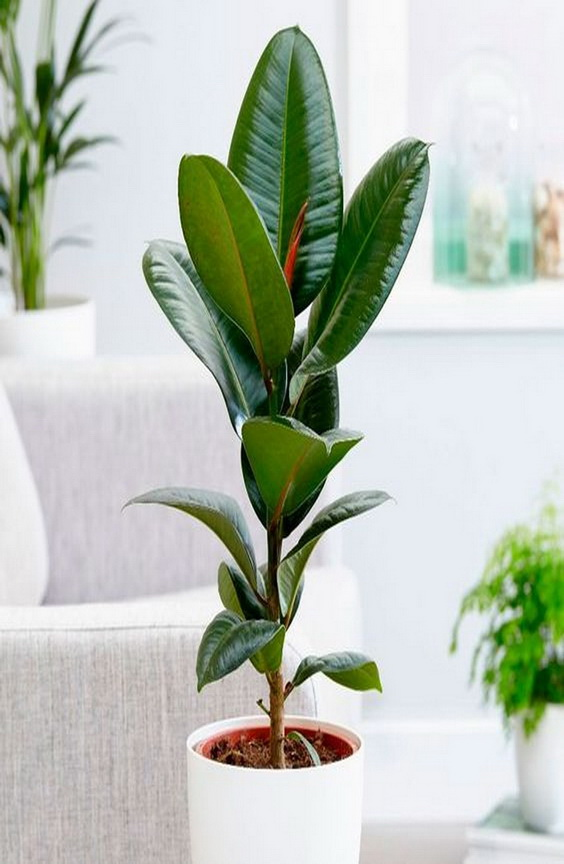
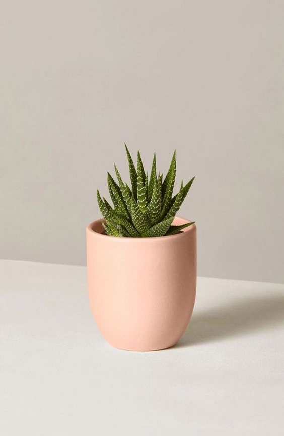
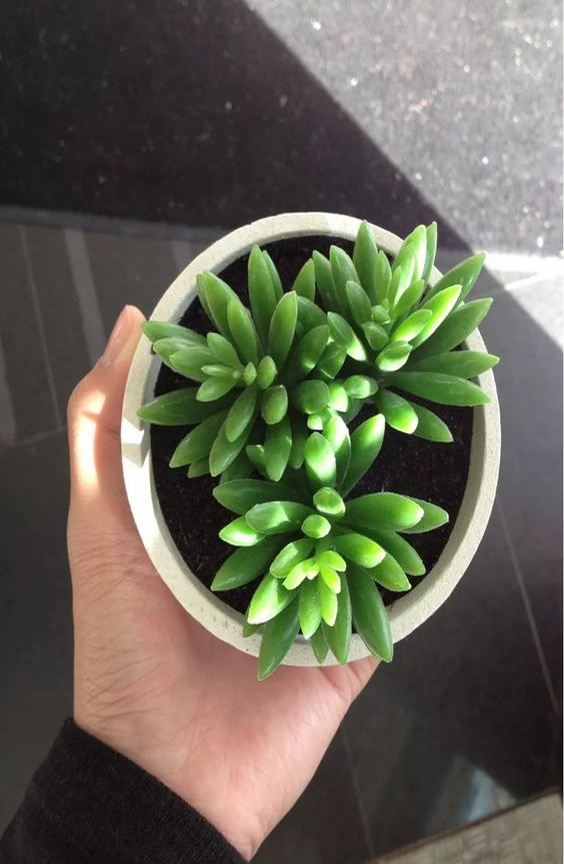
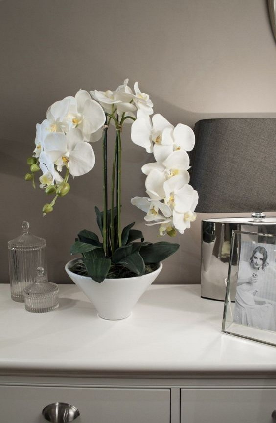
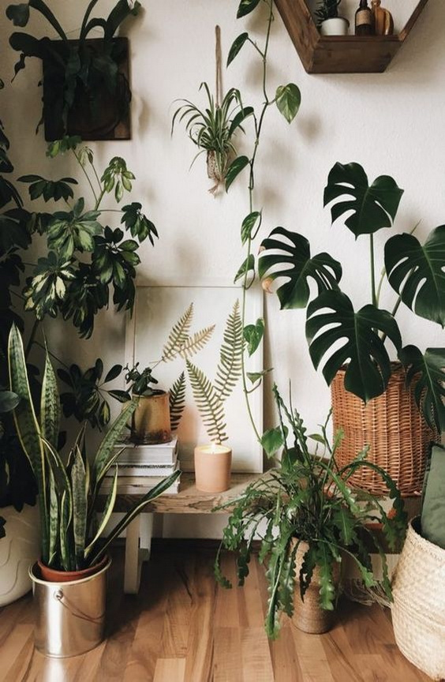

ВОТ НЕСКОЛЬКО СОВЕТОВ, КАК ПРАВИЛЬНО ПОЛИВАТЬ КАКТУС:
Главное правило для кактусов и всех суккулентов: лучше недолить, чем перелить растение. Обилие влаги может привести к загниванию корней.
Даже для самого влаголюбивого кактуса (эпифитные кактусы - рипсалидопсис, шлюмбергера) будет достаточно полива раз в неделю.
Вода не должна попадать на стебель растения, поливают только по краю горшка.
Полив кактуса сокращается по мере понижения среднесуточных температур. Если с октября кактус содержится в прохладном месте, его не поливают вовсе. В зимний период все процессы жизнедеятельности у кактуса замедляются и влага не впитывается корнями.
Поливать лучше отстоянной и мягкой водой. Как смягчить воду для полива цветов можно прочитать тут.
Почему желтеют листья у фикуса

ПРИЧИНЫ НЕПРИЯТНОГО ЯВЛЕНИЯ:
Наиболее распространенной причиной пожелтения и опадания листьев у фикуса является неправильный полив. Не стоит думать, что обильный полив растению лишь на пользу. Если земля под цветком чуть влажная, полив следует отложить до момента, когда она полностью высохнет. Влажность грунта изнутри можно проверить с помощью длинной палочки.
Непригодные условия содержания комнатной культуры также могут стать причиной рассматриваемого явления. Помещение, в котором находится фикус, должно быть светлым и достаточно теплым. Однако перебарщивать не следует, листья фикуса очень восприимчивы к солнечному свету. В зимнее время комфортная температура для растения – +18-20 градусов. Не рекомендуется помещать фикус вблизи батарей – там воздух не только слишком теплый, но и сухой.
Привести к пожелтению и опаданию листьев фикуса могут и вредоносные организмы. Необходимо внимательно осмотреть грунт и листву растения. Если вы встретите вредителей, стоит незамедлительно приобрести специальное средство для борьбы с ними.
Недостаток питательных веществ в грунте может стать причиной появления желтизны на листьях фикуса. Решить проблему можно с помощью подкормки или пересадки цветка с последующей подкормкой.
Искусственный свет для цветов

КАК ПОДОБРАТЬ ОПТИМАЛЬНОЕ ОСВЕЩЕНИЕ:
Сейчас опытные цветоводы советуют использовать либо специальные фитолампы (приобрести можно на сайте GrowerStore), либо обыкновенные трубочные лампы, дающие желтый и голубой свет 3:1 соответственно (недостаток красного «оттенка» можно восполнить лампой накаливания).
В независимости от того, какой вид светотехники вы выберете, необходимо подобрать место для ее размещения. Сами осветительные приборы не должны располагаться в непосредственной близости от растений: их нагрев может негативно сказаться на здоровье вашего любимца. Оптимальное расстояние от лампы до цветка – 50-100 сантиметров. Размещать осветительный прибор лучше сверху, чтобы лучи света падали на растение по аналогии с естественным освещением.
Как правило, большие споры вызывает оптимальное время освещения цветка. Как упоминалось ранее, разные виды растений требуют различного количества световых лучей. Для большинства из них оптимальный световой день длится 12-14 часов.
Если вы хотите, чтобы ваш цветок радовал вас большими и красивыми бутонами, создайте ему оптимальные условия для комфортного роста: восполните недостаток солнечного света! Искусственный свет для цветов поможет вам обеспечить растение всеми необходимыми ресурсами жизнедеятельности. Внимательно изучите потребности вида растений, который произрастает у вас дома, и создайте для цветка соответствующую им среду.
Выбор растения в магазине

ПРАВИЛА ПОКУПКИ:
Ориентация на местности – где расположилось растение?
Не покупайте цветок, если он стоит в проходе, на сквозняке или вплотную к окну. Это плохо тем, что растение могло получить травмы, солнечные ожоги и простудиться. Даже если внешне цветок выглядит здоровым, последствия могут стать неприятным сюрпризом.
Изучаем корни.
Поднимите горшок с растением и осмотрите его. Если корни сильно выпирают из дренажных отверстий, значит, цветку в горшке тесно и ему срочно требуется пересадка. Если же корни сильно вылезают из земли, значит, растение сидит в одном горшке уже очень долго. Впрочем, это не относится к орхидеям, монстерам и многим ароидным, поскольку у них помимо подземной корневой системы еще предусмотрена и воздушная.
Смотрим на листья.
Они должны быть зелеными, плотными, не должны закручиваться. Сухие кончики, различные пятна – эти признаки говорят о болезни растения. Голые стебли тоже доказывают, что растение пострадало. Осмотрите стебли на наличие вредителей, не лишним будет взглянуть на листья снизу. Перекормленные растения можно узнать по очень мягким листьям и стеблям.
Рассматриваем землю в горшке.
Она сухая или слишком сырая, в поддоне есть жидкость, между стенками горшка и землей есть пустое пространство? Не советую вообще покупать цветы в этом магазине. Почва должна быть слегка увлажнена.
Орхидеи в горшках

ПОЧЕМУ ОРХИДЕИ САЖАЮТ В ПРОЗРАЧНЫЕ ГОРШКИ:
Выращивать орхидеи в прозрачных горшках совсем необязательно, но желательно. Дело в том, что прозрачные стенки вазона позволяют цветоводу объективно оценивать самочувствие цветка. Нередко так бывает, что из-за неправильного полива корневую систему поражает гниль, но по надземным частям растения этого не скажешь. Орхидея даже может в это время цвести.
Сквозь стенки прозрачного пластика негативные процессы можно вовремя заметить и предпринять необходимые меры по спасению заболевшей растишки.
Следует отметить, что корневая система орхидеи не нуждается в укоренении в каком-либо субстрате. В природе эти красиво цветущие эпифиты растут прямо на деревьях, скалах, либо у самой поверхности земли. Корни прямо из воздуха собирают влагу и питательные вещества.
Уход осенью

УХОД ЗА РАСТЕНИЯМИ ОСЕНЬЮ:
Осень – прекрасная пора, воспеваемая поэтами всех времен и народов. Золотая листва, свежий воздух, горячий чай и теплы й плед делают это время года особенно привлекательным.
Однако резкие климатические изменения неблагоприятно влияют на комнатные цветы. Даже для тех культур, которые «обитают» в домашних условиях, этот период считается очень опасным. Жизненные функции растений затухают, цветы готовятся к зимнему отдыху. Поэтому осенью горшковые культуры нуждаются в особом внимании.
В осенние месяцы ориентиром для вас станет погода. Так, в солнечные деньки следите, чтобы почва не пересыхала, но если за окном дождь, пропустите полив, подождите, пока грунт подсохнет. Многие представители комнатных растений осенью нуждаются в меньшем количестве воды, например, кактусы и суккуленты в это время следует поливать всего 1-2 раза в месяц.